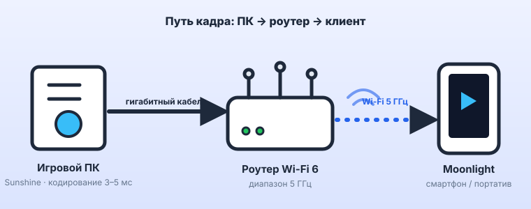
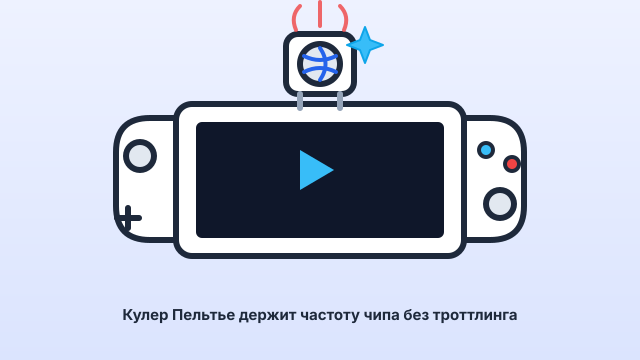

К 2026 году флагманский смартфон с OLED-экраном 120 Гц и чипом уровня Snapdragon 8 Elite незаметно превратился в самое универсальное игровое устройство в доме. Он тянет тяжёлые ПК-игры по локальному стримингу с вашего же компьютера или PS5 с задержкой в единицы миллисекунд, автономно запускает Windows-хиты десятилетней давности через слой совместимости и эмулирует всю консольную классику вплоть до GameCube и PS2. Остаётся добавить правильный обвес — телескопический геймпад, активное охлаждение и питание — и получить портатив, который не привязан ни к одной экосистеме. Разбираем всю связку по частям.
1. Локальный домашний стриминг: ПК и PS5
Локальный стриминг — это когда тяжёлую игру считает мощное устройство дома (игровой ПК или консоль), а смартфон получает по домашней сети готовый видеопоток и отправляет обратно нажатия. В отличие от облачных сервисов, здесь нет абонплаты, чужих серверов и зависимости от магистрального интернета: весь трафик живёт внутри квартиры, а задержку определяют ваш роутер и провод.

ПК → смартфон: Sunshine + Moonlight против Steam Remote Play
Есть два рабочих пути вывести картинку с игрового ПК на телефон или портативку.
- Sunshine + Moonlight. Sunshine — открытый серверный кодировщик, который ставится на ПК (NVIDIA, AMD, Intel — без привязки к GeForce Experience). Moonlight — клиент под Android, iOS, Windows и практически любую портативку. Связка отдаёт до 4K, поддерживает HDR, кодеки HEVC (H.265) и AV1 на новых видеокартах, произвольный битрейт и частоту до 120 кадров. Время на кодирование кадра на нормальной видеокарте — 3–5 мс, и это главный аргумент против облака.
- Steam Remote Play. Встроен в Steam, настраивать почти нечего: запустил игру на ПК, подключился с телефона через приложение Steam Link. Работает отлично «из коробки», но вы ограничены играми из Steam на переднем плане, тонких настроек кодека и HDR почти нет, а на слабой сети клиент агрессивнее «мылит» картинку.
Что по настройкам. Для игры по кабелю или чистому 5 ГГц ставьте битрейт 50–80 Мбит/с для 1080p и 100–150 Мбит/с для 1440p/4K. Кодек — HEVC, а если и ПК, и телефон умеют AV1, включайте его: при том же битрейте картинка чище. Частоту потока выставляйте под экран телефона (обычно 60 или 120), включайте режим полноэкранного эксклюзива на ПК и V-Sync выключайте на стороне игры, отдав синхронизацию клиенту.
PS5 → смартфон: Chiaki-ng против PS Remote Play
С PlayStation 5 история похожая: официальный путь удобен, но зажат, а открытый — гибче.
- Chiaki-ng (развитие Chiaki и chiaki4deck). Открытый клиент Remote Play для Android, ПК и портативок. Умеет то, чего годами не давало официальное приложение: HDR, повышенный битрейт, ручной выбор разрешения и FPS, корректный маппинг любых геймпадов, адаптивные триггеры DualSense на поддерживаемых платформах. Идеально ложится на смартфон с геймпадом и на Steam Deck.
- PS Remote Play (официальное приложение). Ставится в пару кликов и не требует регистрации ключей, но капризно к сети, периодически рвёт сессию, ограничивает битрейт и до сих пор скупо на настройки. Как запасной вариант — годится, как основной — разочаровывает.
Обе программы используют один и тот же встроенный в консоль сервер Remote Play, поэтому «прошивать» PS5 не нужно — достаточно включить Remote Play в настройках и, для стабильности, оставить консоль в режиме покоя с активной опцией «Оставаться на связи с интернетом».
Сеть: почему всё решает не софт, а провод и 5 ГГц
90% жалоб на «лагающий стриминг» — это проблемы сети, а не Moonlight или Chiaki.
- Источник — только по кабелю. Игровой ПК или PS5 должны быть подключены к роутеру гигабитным Ethernet. Wi-Fi на стороне источника добавляет джиттер и потери, которые кодек вынужден компенсировать «замыливанием» и ростом задержки.
- Клиент — 5 ГГц или Wi-Fi 6/6E. Телефон подключайте к диапазону 5 ГГц (в идеале — Wi-Fi 6 с шириной канала 80 МГц) и находитесь в одной комнате с роутером или точкой доступа.
- 2,4 ГГц — не для стриминга. Этот диапазон забит соседскими сетями, микроволновками и умным домом, у него узкие каналы и высокий пинг под нагрузкой. Даже если игра «идёт», вы получите плавающую задержку и просадки битрейта.
- Проверка. В Moonlight и Chiaki-ng включите оверлей статистики: сетевой пинг в пределах LAN должен быть меньше 2–4 мс, потерь пакетов — ноль, декодирование кадра на телефоне — 2–8 мс. Суммарная задержка «нажал — увидел» на хорошем сетапе укладывается в 20–35 мс, что субъективно неотличимо от игры за самим ПК.
2. ПК-игры и консольная классика прямо на смартфоне
Стриминг требует, чтобы дома работал мощный источник. Но часть библиотеки смартфон 2026 года тянет полностью автономно — в поезде, самолёте и на даче без розетки.
Эмуляция Windows на Android: Winlator и GameHub
Winlator — это готовая сборка, которая поднимает на Android слой запуска Windows-приложений: транслятор инструкций Box64/FEX (x86-64 → ARM), Wine как реализация Windows API, DXVK для перевода DirectX в Vulkan и открытые драйверы Turnip для графики Adreno. GameHub и близкие форки — та же идея с другим лаунчером и профилями под конкретные игры.
- Что реально идёт. Игры примерно до 2015 года и нетребовательные инди: Fallout: New Vegas, серии Need for Speed, старые Tomb Raider, Disco Elysium, Hotline Miami, стратегии и визуальные новеллы. На Snapdragon 8 Gen 2 и новее многие из них выдают стабильные 60 кадров.
- Чего ждать не стоит. Современные AAA с Denuvo, античитами уровня ядра и DirectX 12 — либо не запускаются, либо неиграбельны. Winlator — это про «вторую жизнь» уже купленной библиотеки, а не про запуск новинок.
- Настройка в двух словах. Выбирайте контейнер с актуальным Wine, драйвер Turnip/Vulkan, включайте DXVK и выставляйте разрешение рендера ниже экранного (720p) с последующим растягиванием — это главный рычаг производительности.
Легальная сторона вопроса: запускайте только те игры, которыми владеете (файлы из вашей библиотеки GOG/Steam), — сам по себе слой совместимости ничего не нарушает.
Золотой фонд ретрогейминга: RetroArch, PPSSPP, NetherSX2, Dolphin
Здесь смартфон давно обогнал специализированные ретро-консоли по удобству.
- RetroArch — комбайн-оболочка с ядрами почти под всё до 6-го поколения: NES, SNES, Sega, PS1, GBA, аркады. Единый интерфейс, шейдеры под «ламповую» картинку, синхронизация сейвов.
- PPSSPP — эмулятор PSP, один из самых вылизанных: большинство игр идёт в 2–3-кратном разрешении с идеальной скоростью даже на середняках.
- NetherSX2 — форк AetherSX2 для эмуляции PS2. Флагманский чип уверенно тянет God of War, Persona 4 и Gran Turismo 4 в 60 кадров.
- Dolphin — GameCube и Wii. Официально есть на Android; на середняках 2026 года большая часть каталога играбельна в 1080p.
- iOS. После смягчения правил App Store эмуляторы официально доступны и на айфоне: RetroArch, PPSSPP, Delta (Nintendo), а через альтернативные каталоги в ЕС — и Dolphin. Производительность чипов Apple здесь избыточна.
Как и с Winlator: легально это работает на ваших собственных дампах картриджей и дисков. BIOS-образы и игры из интернета — уже нарушение авторских прав, и ТехноГид такие сценарии не разбирает.
Нативные тяжёлые игры и AAA-порты
Не забывайте, что часть ААА теперь выходит на смартфон нативно и без всяких прослоек: Resident Evil 4 Remake и Village, Assassin's Creed Mirage, Death Stranding, Genshin Impact и Wuthering Waves в максимальных настройках. Это самый предсказуемый по стабильности сценарий — но и самый требовательный к охлаждению, о чём ниже.
3. Железо и аксессуары: собираем идеальный сетап
Геймпад: только прямой Type-C
Телескопический геймпад, в который смартфон вставляется целиком, превращает его в подобие Switch. Ключевой параметр — тип подключения.
- GameSir G8 Galileo / G8 Plus — эталон категории: полноразмерные холловские стики и триггеры, компоновка как у Xbox, встроенный порт для сквозной зарядки и 3,5 мм джек.
- Backbone One — самый компактный и «приложенческий», версии под USB-C и Lightning, удобная экосистема, но стики небольшие.
- Razer Kishi (V2/Ultra) — крепкий средний вариант с раздвижным мостом; Ultra умеет растягиваться и на небольшие планшеты.
- Проводное соединение — задержка ввода стремится к нулю
- Нет отдельной батареи и её подзарядки
- Мгновенное подключение без сопряжения
- Не отваливается в зоне помех 2,4 ГГц
- Плавающая задержка 10–40 мс, критично для файтингов и шутеров
- Свой аккумулятор — ещё одно устройство на зарядку
- Конфликты в диапазоне 2,4 ГГц рядом с Wi-Fi-стримингом
- Иногда «просыпается» с задержкой
Отдельно проверяйте сквозную зарядку (pass-through): без неё в длинной сессии стриминга или тяжёлого эмулятора телефон разрядится за 1,5–2 часа, а зарядить его во время игры будет некуда — порт занят геймпадом.
GameSir G8 Galileo — холловские стики и триггеры, компоновка как у Xbox, прямой Type-C с нулевой задержкой ввода и порт сквозной зарядки. Оптимальный телескопический геймпад для стриминга и эмуляции.
Реклама. ООО «Яндекс Маркет», ИНН 9704254424, erid: 5jtCeReNx12oak2pVaJ4t2k
Реклама. ООО "АЛИБАБА.КОМ (РУ)", ИНН 7703380158, erid: 2bL9aMPo2e49hMef4pdzo6JkYp
Охлаждение: полупроводниковые кулеры на элементах Пельтье
Смартфон не рассчитан на многочасовую полную нагрузку. Через 15–25 минут в тяжёлом Winlator, эмуляции PS2 или нативной ААА чипсет упирается в температурный лимит и сбрасывает частоты — начинается троттлинг с просадками кадров.

- Активные кулеры Пельтье (Black Shark MagCooler, Flydigi B, магнитные MagSafe-модели) прижимаются к спинке аппарата и элементом Пельтье охлаждают её ниже комнатной температуры, отводя тепло вентилятором. Это единственный способ держать пиковую частоту чипа неограниченно долго.
- Магнитное крепление (MagSafe / Qi2) удобнее клипсы: кулер не мешает геймпаду и снимается одним движением.
- Минусы — кулеру нужно собственное питание (от повербанка или сети), на холодной спинке в тёплой комнате возможен конденсат, и он добавляет 60–120 г к весу.
Для стабильных 60 FPS в Winlator и эмуляции PS2 берите магнитный кулер на элементе Пельтье — Black Shark MagCooler или FunCooler: он крепится к спинке за секунду, не мешает геймпаду и удерживает частоту чипа без троттлинга в многочасовых сессиях.
Выбрать кулер Black Shark на AliExpressРеклама. ООО "АЛИБАБА.КОМ (РУ)", ИНН 7703380158, erid: 2bL9aMPo2e49hMef4pdzo6JkYp
Питание: пауэрбанк на геймпаде и MagSafe
- Компактный повербанк на 5 000–10 000 мА·ч с Power Delivery, подключённый в порт pass-through геймпада, — базовый вариант: одной зарядки хватает на 3–5 часов стриминга.
- MagSafe-повербанки крепятся к спинке магнитом и не тянут провод, но греют аппарат — их лучше сочетать с кулером или использовать для лёгких игр.
- Мощность. Берите модель с выходом не меньше 20 Вт: под полной нагрузкой смартфон вместе с кулером потребляет 12–18 Вт, и слабый повербанк будет лишь замедлять разряд, а не держать заряд.
4. Сравнение платформ-приёмников
Смартфон с геймпадом — не единственный вариант «тонкого клиента». Вот честный расклад по четырём основным.
- Смартфон + телескопический геймпад. Самый универсальный: стриминг с ПК и PS5, автономные ПК-игры через Winlator, вся эмуляция, нативные ААА, а ещё это ваш основной телефон. Минусы — нагрев без кулера и посредственная эргономика в некоторых геймпадах.
- Steam Deck OLED. Лучшая автономная портативка: родная библиотека Steam, легальная эмуляция «в клик» через EmuDeck, отличные Moonlight и Chiaki-ng, 90 Гц HDR-экран. Минусы — вес 640 г и 2–3 часа в тяжёлых играх.
- Модифицированный Switch OLED. Технически способен и на эмуляцию, и на стриминг через homebrew, но любая модификация нарушает соглашение Nintendo и грозит перманентным баном консоли и аккаунта. Как легальный «приёмник» стриминга он не рассматривается — для этого есть устройства без рисков.
- PlayStation Portal. Специализированный клиент Remote Play для PS5 с 8-дюймовым 1080p-экраном и полноценным хватом DualSense с адаптивными триггерами. Отлично делает ровно одну вещь — стриминг со своей PS5 (и облачных сессий). Минусы — не запускает никаких приложений и эмуляторов, зависит от качества Wi-Fi и бесполезен без PlayStation.
5. Сводная таблица параметров и сценариев
| Параметр / сценарий | Смартфон + геймпад | Steam Deck OLED | Switch OLED (модифиц.) | PlayStation Portal |
|---|---|---|---|---|
| Стриминг с ПК | Да (Moonlight) | Да (Moonlight) | Ограниченно (homebrew) | Нет |
| Стриминг с PS5 | Да (Chiaki-ng) | Да (Chiaki-ng) | Ограниченно (homebrew) | Да (штатно) |
| Автономные ПК-игры | Winlator (до ~2015 г.) | Полноценно (это ПК) | Нет | Нет |
| Эмуляция классики | До PS2 / GameCube | До PS3 / Switch (легально) | До PS1 / N64 (с CFW) | Нет |
| Нативные игры | Мобильные ААА и порты | Библиотека Steam | Каталог Switch | Нет |
| Экран | 6.5–6.9″ OLED, 120 Гц | 7.4″ OLED, 90 Гц, HDR | 7″ OLED, 60 Гц | 8″ LCD, 1080p, 60 Гц |
| Автономность (стриминг) | 1.5–2 ч (3–5 ч с повербанком) | 4–6 ч | 4–6 ч | ~7 ч |
| Троттлинг под нагрузкой | Сильный без кулера | Слабый | Слабый (сильный при разгоне) | Не актуален (тонкий клиент) |
| Риски | Нет | Нет | Бан консоли и аккаунта | Нет |
| Цена входа | Геймпад + кулер (уже есть телефон) | Средний сегмент | Дёшево, но с рисками | Бюджетный аксессуар |
6. Итоговый вердикт
Универсальный выбор — смартфон + геймпад с Type-C
Если у вас дома есть игровой ПК или PS5, флагманский смартфон с телескопическим геймпадом закрывает вообще всё: локальный стриминг с задержкой на уровне проводного геймпада, автономные ПК-хиты через Winlator, эмуляцию до PS2/GameCube и нативные ААА. Обязательный обвес — геймпад с прямым Type-C и pass-through, активный кулер на элементе Пельтье и повербанк на 20 Вт с PD.
Лучшая самостоятельная портативка — Steam Deck OLED
Когда мощного ПК дома нет или нужен один автономный девайс без танцев с контейнерами: родная библиотека Steam, эмуляция «в клик», лучшие клиенты Moonlight и Chiaki-ng и 90 Гц HDR. Платите весом и временем автономной работы в тяжёлых играх.
Нишевые варианты
PlayStation Portal берут те, у кого есть PS5 и нужен максимально удобный хват DualSense для стриминга — и больше ничего. Модифицированный Switch OLED как игровой «приёмник» рекомендовать нельзя: экономия не стоит перманентного бана консоли и всех легальных покупок на аккаунте.